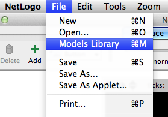
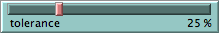

![[Party model]](images/sample/party1.png)
这一部分让你思考什么是计算机建模以及如何使用它,也让你对 NetLogo 软件有所了 解。我们推荐初学者从这里开始。
你曾经参加过聚会吗？或者你观察过聚会上人们是如何聚集成堆么？你也会发现人们并不总是留在一个群组里面。 当人们走来走去的时候，小组就会变化。如果你观察这些改变得话，你应该注意到模式得形成。
例如，在社交场合人们倾向于展示出与工作或家庭中不同的行为。那些在工作中信心满 满的人可能在社交场合变得羞怯,而那些在工作中安静保守的人却可能与朋友发起聚会。
聚集模式也取决于聚会的性质。在某些场合,人们接受训练组织成混合小组,例如聚会 游戏或校园活动。但在非结构化的气氛里,人们以更加随机的方式形成小组。
这种分组行为有没有什么模式呢?
让我们使用计算机对聚会中人们的行为建模,更详细的考察这个问题。NetLogo 的 “Party”模型从性别这个特殊角度考察这个问题:为什么这些小组多数是男性,或多数是 女性?
我们使用 NetLogo 研究这个问题。
操作步骤：
- 启动 NetLogo.
- 在File菜单中选择 "Models Library".

- 打开文件夹"Social Science" .
- 点击叫 "party"得模型。
- 按下 "open" .
- 设置 "setup" 按钮.
在模型得视图里面，你会看到粉色还有蓝色得线当然还有数字:
这些线表示聚会上男女混合的小组。男性用蓝色表示,女性用粉色。数字是每个小组的人数。
所有小组的人数相同吗?
所有小组的每种性别的人数相同吗?
例如你邀请了 150 人参加聚会,你想知道人们怎样扎堆。假设人们分成了 10 组。
你怎么思考分组情况?
这里我们使用计算机仿真,而不是去问你那 150 个亲密朋友。
操作步骤：
- 按下 "go" 。 (再次按下"go" 会停止模型运行。)
- 观察人们的移动直到模型停止。
- 看图形输出了解发生了什么。
- 使用速度的进度条，如果你需要将模型得速度降低得话。
现在每组有多少人？
开始时你可能认为将150人分成10组的结果是每组大约15人。从模型运行得知,人们 并没有均等的分成 10 组 — 相反,有些组人数特别少,而有些组人数却特别多。另外,随 着时间发展,从所有小组男女都有转变为所有小组均由同性组成。
这个要怎么解释呢？
对这个问题有很多可能的回答。本模型的设计者认为聚会上的小组不是完全按随机方式 形成的,小组如何形成取决于个体的行为。模型设计者关注一个特殊变量 "tolerance"(容 忍度):

这里将容忍度定义为个体感到舒服的异性的比例。如果小组中异性比例超过容忍度,他 们就觉得不舒服,因此离开这一组去寻找别的小组。
例如,如果容忍度水平设为 25%,那么一个男性只有在女性比例少于 25%的小组里才感 到舒服。同样女性只有在男性少于 25%的小组里才感到舒服。
当个体变得不舒服时选择离开,移动到别的小组,这可能又让这个组中的某些人不舒服。 这种链式反应不断进行,直到聚会上的所有人都感到舒服。
注意这个模型中,容忍度不是固定的。用户可以用滑动条改变容忍度,重新运行模型, 看看结果如何。
怎样重新启动模型：
- 如果 "go" 按钮已按下 (黑色),说明模型还在运行。再次按下该按钮停止运行。
- 通过拖动红色手柄调整 "tolerance" 设置一个新得值。
- 按下 "setup" 按钮设置一个新得值。
- 按下"go" 按钮让模型重新启动。
作为聚会的主人,你希望看到各组里都是男女混合。调整容忍度滑动条,让每组都男女混合。
为保证 10 个小组都是男女混合,容忍度水平要设成多少?
看看你的预测结果吧。
你能想到可能影响每组中男女比例的其他因素或变量吗?
进行预测,用模型检验你的想法。放开手脚同时操作多个变量。
当你检验假设的时候,你会从数据中注意到模式的涌现。例如,如果保持聚会人数不变, 但逐渐增加容忍度水平,更多的组会成为男女混合组。
容忍度水平必须是多少才能得到混合组?
容忍度水平与混合组的比例有什么关系?
用NetLogo对聚会这样的情景建模使你可以对系统进行快速、灵活的试验,而在现实情 况下这是很困难的。建模也给了你少受偏见的影响去观察各种情景的机会,因为你可以检查 系统内部的动态。你会发现随着你建模越来越多,对许多现象的原有的想法会遇到挑战。例 如 Party 模型一个令人惊讶的结果是:即使容忍度水平相对较高,大量性别分离仍然会发生。
这是关于“涌现”现象的一个经典例子,这里小组模式是许多个体交互的结果。“涌现” 思想可以应用在几乎任何领域。
你能想到别的涌现现象吗?
要想获得更多的例子,对这个概念有更深的理解,你可以探索 NetLogo 模型库,里面有 许多模型,演示了各种系统中的这类思想。
要更详细了解关于涌现的讨论以及NetLogo如何帮助学习者进行探索,参见"Modeling Nature's Emergent Patterns with Multi-agent Languages" (Wilensky, 2001).
用户手册的 教学 #1: 运行模型讲诉了模型库更多的细节。
如果你想学习怎样在更深的层次上探索模型, 教学 #2: 命令将引导你了解NetLogo建模语言。
最后,你将学习教学 #3:过程，你将学习怎样替换、扩展模型,增加新行为,以及如 何建造自己的模型。